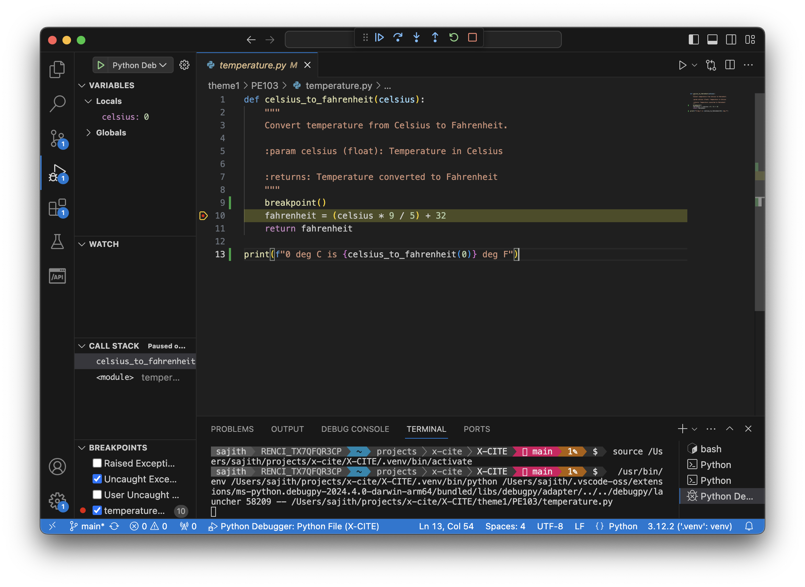
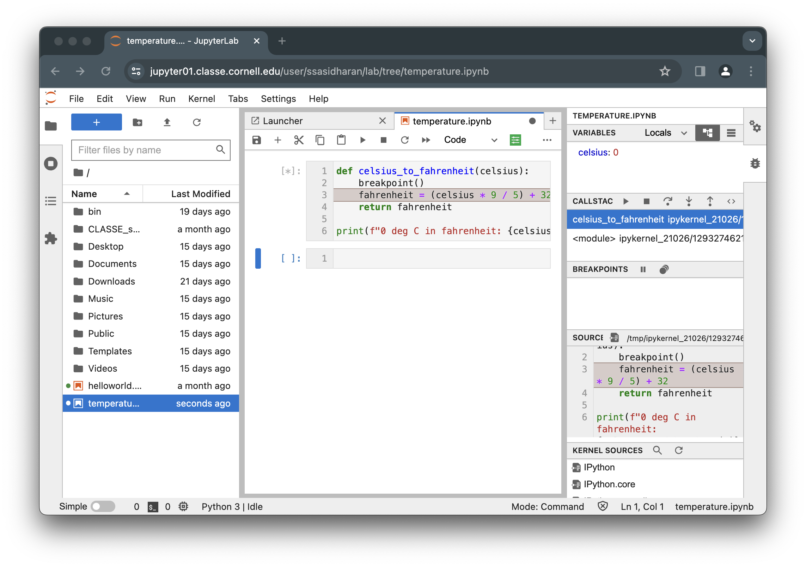

Debugging
Debugging is the process of finding errors, unexpected behavior, or performance issues in software, and fixing them.
Sometimes the problems may seem inscrutable or mysterious. Often in those cases, the real problem would turn out that your mental model of how the thing works is not quite accurate. It would be helpful to deploy the Feynman Algorithm:
- Write down the problem.
- Think real hard.
- Write down the solution.
Obviously you have to follow these steps in sequence. But what if you do not understand the problem quite well yet?
When figuring out problems with software written in Python, there are multiple tools at your disposal. You might find one of these approaches or a combination of several approaches helpful.
Using print statements
You will add print() statements at various points in your code, in order to help you understand the flow of execution and find out where issues occur.
Let us add some print statements to our rather contrived example.
temperature.py
def celsius_to_fahrenheit(celsius):
print(f"input in deg C: {celsius}")
fahrenheit = (celsius * 9 / 5) + 32
print(f"output in deg F: {fahrenheit}")
return fahrenheit
print(f"0 deg C is {celsius_to_fahrenheit(0)} deg F")Now you can watch the execution of the code:
$ python3 temperature.py
input in deg C: 0
output in deg F: 32.0
0 deg C is 32.0 deg FUsing logging
Python standard library provides a logging module, which you can use to log various events in your code. One benefit of using logging is that your application’s logs can include log messages from the libraries you use (if they are set up to use logging), so you will have more information to work with.
The module provides enough knobs to tune things like: level of logging (you can choose to log statements based on their severity, from all messages to just the critical messages), the format of log statements, the location of log files, time stamps of log statements, etc.
You can set up your module to log its actions like so:
temperature.py
import logging
logger = logging.getLogger(__name__)
def celsius_to_fahrenheit(celsius):
logger.info(f"input in deg C: {celsius}")
fahrenheit = (celsius * 9 / 5) + 32
logger.info(f"output in deg F: {fahrenheit}")
return fahrenheitAnd you should do some setup of logging module in your main method:
main.py
import logging
from temperature import celsius_to_fahrenheit
logger = logging.getLogger(__name__)
def main():
logging.basicConfig(filename="temperature.log", level=logging.INFO)
logger.info("Started")
celsius_to_fahrenheit(0)
logger.info("Finished")
if __name__ == "__main__":
main()Running the code above with python3 main.py will write log statements to a file named temperature.log.
temperature.log
INFO:__main__:Started
INFO:__main__:Started
INFO:temperature:input in deg C: 0
INFO:temperature:output in deg F: 32.0
INFO:__main__:FinishedUsing the pdb module
Python standard library has a pdb module, which provides an interactive debugging tool, or a “debugger”. Debuggers allow you to examine code while it is running.
Using a debugger, you can set breakpoints where the execution will stop, you can print values, you can step into through the execution of methods, etc.
You can run a program under pdb with python3 -m pdb <program.py>, like so:
python3 -m pdb temperature.py
> /tmp/temperature.py(1)<module>()
-> def celsius_to_fahrenheit(celsius):
(Pdb) help
Documented commands (type help <topic>):
========================================
EOF c d h list q rv undisplay
a cl debug help ll quit s unt
alias clear disable ignore longlist r source until
args commands display interact n restart step up
b condition down j next return tbreak w
break cont enable jump p retval u whatis
bt continue exit l pp run unalias where
Miscellaneous help topics:
==========================
exec pdb
(Pdb) next
> /tmp/temperature.py(5)<module>()
-> print(f"0 deg C is {celsius_to_fahrenheit(0)}")
(Pdb) step
--Call--
> /tmp/temperature.py(1)celsius_to_fahrenheit()
-> def celsius_to_fahrenheit(celsius):
(Pdb) p celsius
0
(Pdb) next
> /tmp/temperature.py(2)celsius_to_fahrenheit()
-> fahrenheit = (celsius * 9 / 5) + 32
(Pdb) next
> /tmp/temperature.py(3)celsius_to_fahrenheit()
-> return fahrenheit
(Pdb) p fahrenheit
32.0
(Pdb) continue
0 deg C is 32.0
The program finished and will be restarted
> /tmp/temperature.py(1)<module>()
-> def celsius_to_fahrenheit(celsius):
(Pdb) exitAnother typical usage to break into the debugger is to insert an import pdb; pdb.set_trace() line into your code:
temperature.py
import pdb; pdb.set_trace()
def celsius_to_fahrenheit(celsius):
fahrenheit = (celsius * 9 / 5) + 32
return fahrenheit
print(f"0 deg C in fahrenheit: {celsius_to_fahrenheit(0)}")Now you can run the code with python3 temperature-pdb.py, and use various pdb commands.
Or you can insert a breakpoint() statement at the location you want to break into the debugger:
temperature.py
def celsius_to_fahrenheit(celsius):
breakpoint()
fahrenheit = (celsius * 9 / 5) + 32
return fahrenheit
print(f"0 deg C in fahrenheit: {celsius_to_fahrenheit(0)}")Now you can run the program with python3 -m temperature.py. Once the execution reaches the line with breakpoint(), you will be dropped into the pdb shell.
Using the trace module
Python’s trace module allows you to trace program execution:
$ python3 -m trace --trace code/temperature.py
--- modulename: temperature, funcname: <module>
temperature.py(1): def celsius_to_fahrenheit(celsius):
temperature.py(12): print(f"0 deg C is {celsius_to_fahrenheit(0)} deg F")
--- modulename: temperature, funcname: celsius_to_fahrenheit
temperature.py(9): fahrenheit = (celsius * 9 / 5) + 32
temperature.py(10): return fahrenheit
0 deg C is 32.0 deg FTo learn more, run python3 -m trace --help, and read the module documentation.
Using unit tests
It is much easier to debug code when you have tests. The tests you write should help you test individual components of your code, and isolate points of failures. You can use a combination of print() statements, logging, and pdb.
See Testing for some examples.
Talk to a friend or a rubber duck
Get a friend or colleagues to review your code to identify potential issues, provide feedback, and suggest improvements. Another set of eyes can often spot problems that you might have overlooked. Explaining your code line by line to someone else is often helpful in finding the flaws in it.
If no human is immediately available, explain your code to a rubber duck! This very powerful technique is called rubber duck debugging, or simply, “rubberducking”.
Using IDEs
IDEs such as PyCharm and VS Code have built-in debugging facilities.

JupyterLab also has a built-in debugger:

How to use these are left as an exercise to the reader. ;-)